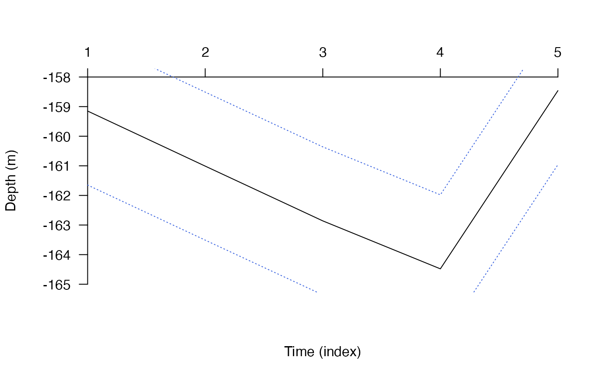

This function creates an ordered list of `record' files derived from the AC/DC/ACDC algorithm (ac, dc or acdc) for particle filtering (PF) via pf.
pf_setup_record(root, type = c("acs", "dc"), use_absolute_paths = FALSE, ...)A string that defines the directory in which files are loaded.
A character that defines the source of the files (type = "acs" refers to an AC* algorithm and type = "dc" refers to the DC algorithm).
A logical variable that defines whether to return relative paths (FALSE) or absolute paths (TRUE) (see file_path_as_absolute).
Additional arguments passed to list.files (excluding full.names).
The function returns an ordered list of file paths.
This function requires the stringr package.
#### Example (1): Example with the AC algorithm
# Define a directory in which to save files
root <- paste0(tempdir(), "/ac/")
dir.create(root)
# Implement the AC algorithm for some example time series
acc <- dat_acoustics[dat_acoustics$individual_id == 25, ][1:5, ]
out_ac <- ac(acoustics = acc,
step = 120,
bathy = dat_gebco,
detection_containers = dat_containers,
mobility = 250,
write_record_spatial_for_pf = list(filename = root))
#> flapper::ac() called (@ 2023-02-19 15:04:01)...
#> flapper::.acs_pl() called (@ 2023-02-19 15:04:01)...
#> ... Checking user inputs...
#> ... Processing movement time series...
#> ... Plotting movement time series (for each chunk)...
#> ... Calling .acs() to implement ACDC algorithm on one chunk...
#> flapper::.acs() called (@ 2023-02-19 15:04:01)...
#>
|
| | 0%... Initiating algorithm: moving over acoustic and internal ('archival') time steps...
#> ... On acoustic time step ('timestep_detection') 1.
#> ... ... On internal time step ('timestep_archival') 1.
#>
|
|================== | 25%... On acoustic time step ('timestep_detection') 2.
#> ... ... On internal time step ('timestep_archival') 1.
#>
|
|=================================== | 50%... On acoustic time step ('timestep_detection') 3.
#> ... ... On internal time step ('timestep_archival') 1.
#> ... ... On internal time step ('timestep_archival') 2.
#> ... ... ... Acoustic container is expanding...
#> Warning: GEOS support is provided by the sf and terra packages among others
#>
|
|==================================================== | 75%... On acoustic time step ('timestep_detection') 4.
#> ... ... On internal time step ('timestep_archival') 1.
#>
|
|======================================================================| 100%
#> ... Movement over acoustic and internal ('archival') time steps has been completed.
#> ... flapper::.acs() call completed (@ 2023-02-19 15:04:02) after ~0 minutes.
#> ... flapper::.acs_pl() call completed (@ 2023-02-19 15:04:02) after ~0 minutes.
#> flapper::ac() finished (@ 2023-02-19 15:04:02)...
# List the files for pf()
files <- pf_setup_record(root, type = "acs", pattern = "*.grd")
utils::head(files)
#> [1] "/var/folders/lx/dhz6yx2n2b7bg93hwz8t97zr0000gq/T//RtmpUnZ226/ac//chu_1_acc_1_arc_1.grd"
#> [2] "/var/folders/lx/dhz6yx2n2b7bg93hwz8t97zr0000gq/T//RtmpUnZ226/ac//chu_1_acc_2_arc_1.grd"
#> [3] "/var/folders/lx/dhz6yx2n2b7bg93hwz8t97zr0000gq/T//RtmpUnZ226/ac//chu_1_acc_3_arc_1.grd"
#> [4] "/var/folders/lx/dhz6yx2n2b7bg93hwz8t97zr0000gq/T//RtmpUnZ226/ac//chu_1_acc_3_arc_2.grd"
#> [5] "/var/folders/lx/dhz6yx2n2b7bg93hwz8t97zr0000gq/T//RtmpUnZ226/ac//chu_1_acc_4_arc_1.grd"
# Implement pf() using files (not shown).
#### Example (2): Example with the DC algorithm
# Define a directory in which to save files
root <- paste0(tempdir(), "/dc/")
dir.create(root)
# Implement the DC algorithm for some example time series
depth <- dat_archival[dat_archival$individual_id == 25, ][1:5, ]
out_dc <- dc(archival = depth,
bathy = dat_gebco,
write_record_spatial_for_pf = list(filename = root))
#> flapper::dc() called (@ 2023-02-19 15:04:02)...
#> ... Setting up function...
#> 'calc_depth_error' function taken to be independent of depth.
#> ... Implementing calc_depth_error()...
#> ... Plotting movement time series (for each chunk)...

#> ... Implementing algorithm over time steps...
#> ... flapper::dc() call completed (@ 2023-02-19 15:04:02) after ~0 minutes.
# List the files for pf()
files <- pf_setup_record(root, type = "dc", pattern = "*.grd")
utils::head(files)
#> [1] "/var/folders/lx/dhz6yx2n2b7bg93hwz8t97zr0000gq/T//RtmpUnZ226/dc//arc_1.grd"
#> [2] "/var/folders/lx/dhz6yx2n2b7bg93hwz8t97zr0000gq/T//RtmpUnZ226/dc//arc_2.grd"
#> [3] "/var/folders/lx/dhz6yx2n2b7bg93hwz8t97zr0000gq/T//RtmpUnZ226/dc//arc_3.grd"
#> [4] "/var/folders/lx/dhz6yx2n2b7bg93hwz8t97zr0000gq/T//RtmpUnZ226/dc//arc_4.grd"
#> [5] "/var/folders/lx/dhz6yx2n2b7bg93hwz8t97zr0000gq/T//RtmpUnZ226/dc//arc_5.grd"
# Implement pf() using files (not shown).